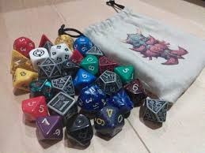

Reality Fracture celebró su prerrelease el fin de semana del 10 al 12 de octubre en tiendas de todo el mundo, y el set llega a las tiendas este jueves 16. Las primeras impresiones de los jugadores que han podido abrirlo en el prerrelease confirman lo que los spoilers prometían: el set más dinámico del año en Limited, con los Ecos generando decisiones de draft completamente nuevas y los Planeswalkers alternativos del Echoverse siendo los picks más disputados de cada booster. El cierre del arco Metronome de tres años tiene el nivel de calidad que la comunidad esperaba.
En formato Commander, los Ecos están generando combos que los jugadores llevan semanas construyendo en teoría y que este fin de semana se han podido probar por primera vez en mesas reales. El Eco de Nissa y su habilidad de convertir terrenos en criaturas ya acumula cientos de listas en EDHREC. El Eco de Nicol Bolas ha resultado ser exactamente tan dominante en partidas de alto poder como los análisis previos indicaban — con un precio de singles que lo convierte en la carta más cara del set.
En el mundo del rol de mesa, Paizo abrió esta semana el Kickstarter de 13 Omens con un arranque histórico: superó su objetivo en menos de cuatro horas y lleva ya más de 800.000 dólares recaudados en sus primeros días. El RPG de horror con sistema d10 y tono folk horror ha generado una expectativa enorme desde que Paizo reveló sus mecánicas en Gen Con, y la respuesta de la comunidad confirma que hay un apetito real por un juego de rol de terror que no sea simplemente "Cthulhu de nuevo".
D&D presenta en octubre Secrets of the Frozen North, el primer suplemento de la Season of Winter que añade una región ártica con nuevas subclases de supervivencia y una campaña de nivel 1 a 10. Critical Role confirma además que la Campaña 4 en Daggerheart estrena en enero de 2027, con el rodaje empezando en las próximas semanas. El otoño del rol de mesa no da tregua: Reality Fracture, 13 Omens en Kickstarter, D&D en temporada winter y Critical Role preparando la nueva era.